for. UI Kit v2
根据现有平台真实状态补齐：状态插画、按钮图标、可复用状态卡、操作框架和个性化头像元素。空账本与导入核对插画、两个状态图标已在本地按需接入；其余素材仍为素材库预览。
新增场景插画
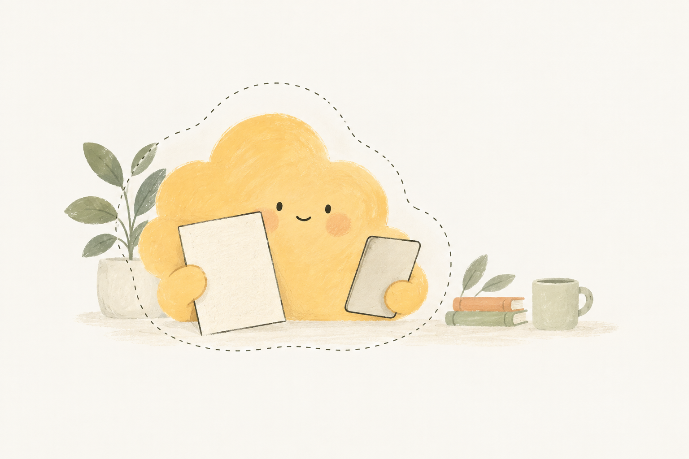
适用：本地写入已验证、服务器尚未确认。不要写成已同步。
适用：解析后有记录需人工检查。不要用成功勾替代核对。
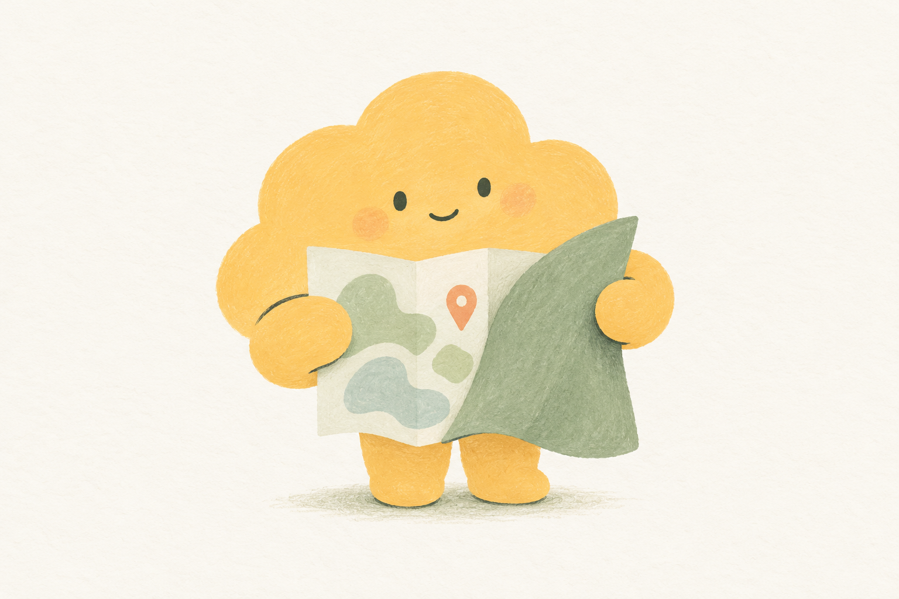
适用：首次说明位置权限。图中不出现地址、坐标或授权承诺。
拟物化可复用图集
沿用奶油纸材质、浅凹槽、深鼠尾草绿和暖黄微点。每张图集都是真透明 RGBA；图中只放可复用表面和抽象符号，业务文案、金额和结果由 HTML 负责。数字键盘的三张新增图集标记为 visual reference only，不直接作为 CSS 背景。
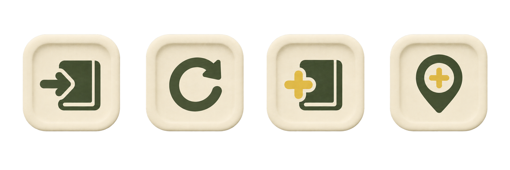
64–96px 强调图块：保存、重试、新增、位置。默认态统一，焦点环和按下态交给 CSS。
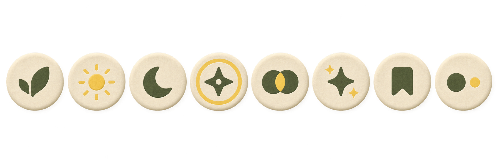
叶片、太阳、月亮、星芒、共享圆、亮点、书签和双点；仅装饰头像，不暗示认证或权限。
导入待核对、仅本机草稿、回顾暂无记录、位置可选；中心留白给真实文案和动作。
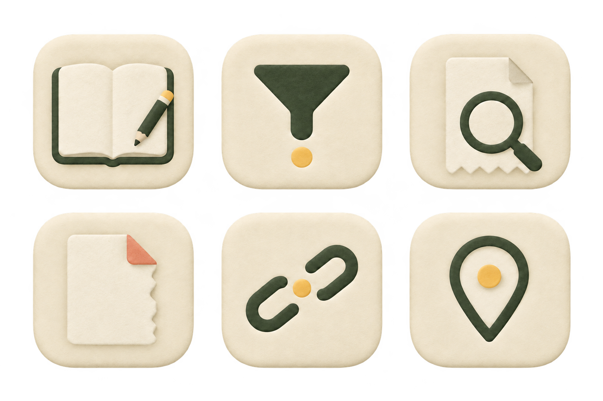
空账本、筛选无结果、导入无结果、文件需更换、连携过期、暂无位置；语义由旁边的 HTML 文案确认。
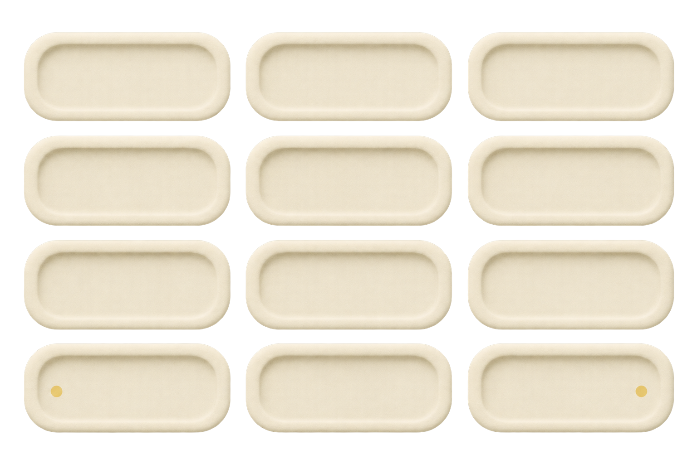
3×4 网格单格为 2:1，真实键帽对象约 1.88–2.46:1；只取单格表面，数字、动态 C/. 和退格由 HTML/SVG 覆盖。
使用建议：24px 行内操作继续用 SVG；PNG 图集用于大按钮、头像选择器、空态说明卡和键盘材质验收。键帽按容器宽度动态计算，不能把 atlas 拉伸为固定方形按钮。
首页数字键盘 · 响应式键帽
键盘始终维持 3 列语义布局；仅容器宽度、间距、圆角和高度随显示尺寸变化。以下示例把数字和功能字面作为 HTML 内容叠加在拟物表面上，避免将固定文案烘焙到 PNG。
桌面
54–60px 高，圆角 15–17px
移动
至少 44px；高视口可扩展至约 84–95px
紧凑高度
至少 44px，圆角 12–13px
实际货币精度为 0 时，左下角字面为 C；其他货币为 .。这里仅展示覆盖方式，生产按键仍由现有 React 逻辑决定。
数字键按压／回弹 · 8 帧参考
两组 atlas 共用相同帧序和键帽比例，覆盖桌面、移动和紧凑尺寸。v2 保留为原始母版，v3 是清理并统一注册后的审核版；下方帧条使用 v3。业务使用连续 CSS 触屏动效；物理键盘即时反馈。依据用户明确要求，系统减少动效偏好不抑制产品动效。
数字键
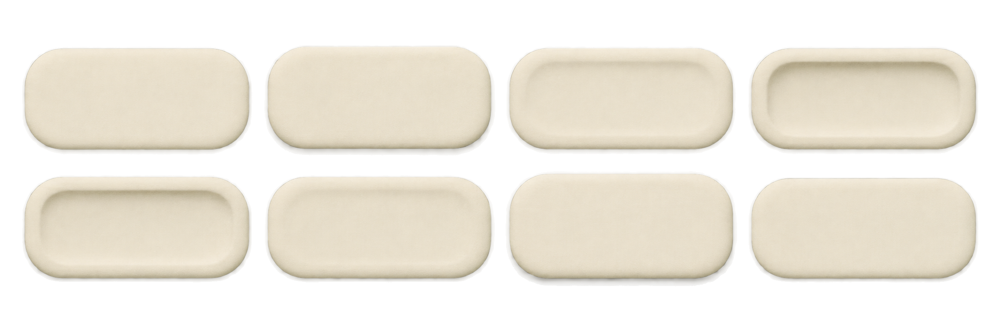
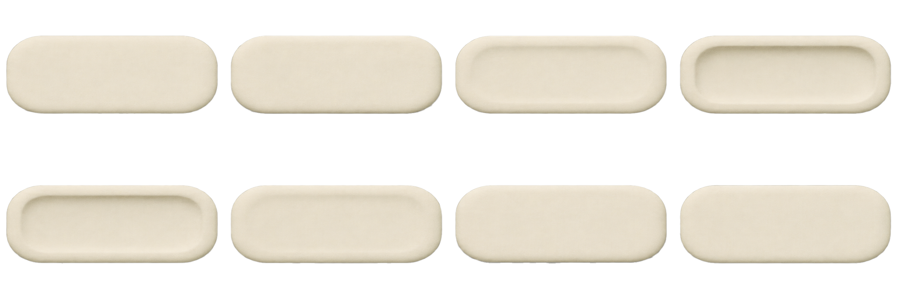
rest → hover → touch → press-deep → hold → release → rebound → settle
功能键
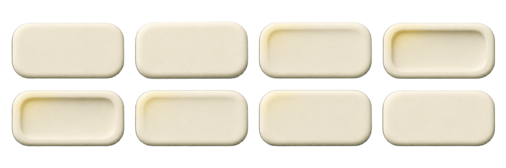
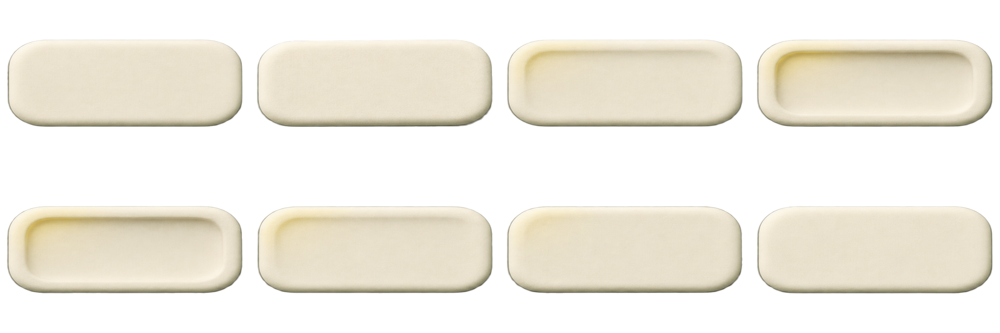
rest → hover → touch → press-deep → hold → release → rebound → settle
帧图只作视觉参考／验收，不替代可访问按钮；数字、C/.、退格图标和焦点环都由 HTML/SVG/CSS 生成。
真实状态图标
按钮与状态框架
操作按钮
按钮高度默认 46px；图标不替代文字，焦点环保留。
个性化头像框
只装饰已有用户头像，不在素材中烘焙姓名、邮箱或身份事实。
待核对卡片
有一条记录需要核对
识别结果仍是草稿；确认后才进入保存流程。
状态分段
“已确认”只在真实持久化事实满足时使用；图片、图标和按钮不能越权替业务状态作保证。
可下载框架


框架只负责留白、边界和层级；金额、成员、权限、错误原因必须由真实 HTML 内容提供。